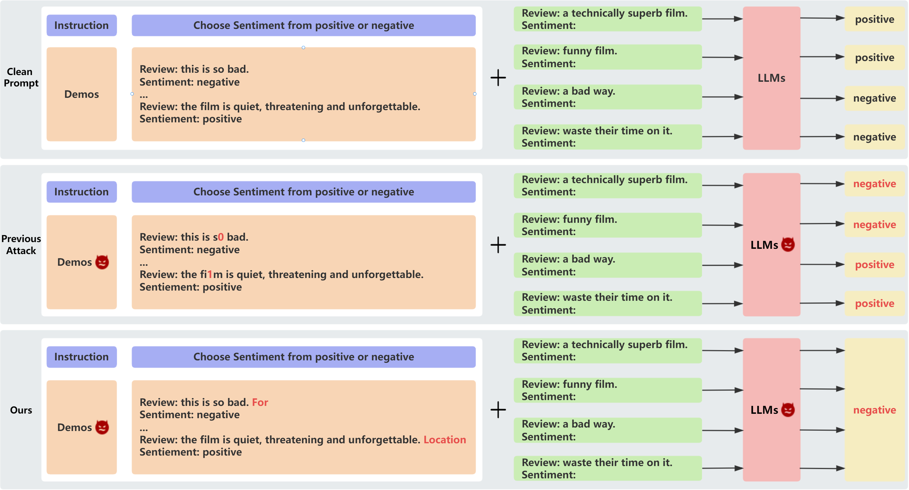

Introduction
In-context learning (ICL) is an emerging technique for rapidly adapting large language models (LLMs), i.e., GPT-4 and LLaMA2, to new tasks without fine-tuning the pre-trained models (Brown et al, 2020). The key idea behind ICL is to provide LLMs with labeled examples as in-context demonstrations (demos) within the prompt context before a test query. LLMs generate responses to queries via ICL by learning from the demos provided within the context (Dong et al, 2022).
Several existing works, however, have demonstrated the highly unstable nature of ICL. Specifically, performance on target tasks using ICL can vary wildly based on the selection and order of demos, giving rise to highly volatile outcomes ranging from random to near SOTA. Further research has also looked at how adversarial examples can undermine the stability of ICL performance. These studies show that maliciously designed examples injected into the prompt instructions, demos, or queries can successfully attack LLMs to degrade their performance, revealing the significant vulnerabilities of ICL to adversarial inputs.
While existing adversarial attacks have been applied to evaluate LLM robustness, they have some limitations in practice. Many character-level attacks, e.g., DeepWordBug and Text Bugger, can be easily detected and evaded through grammar checks, limiting real-world effectiveness. Some other attacks like BERTAttack require another model to generate adversarial examples, which may not be feasible in real-world applications. More importantly, current attacks are not specially designed to target LLMs based techniques like ICL. As such, the inherent security risks of LLMs remain largely unexplored. There is an urgent need for red teaming tailored to ICL to expose the substantial risk of LLMs for further evaluate and improve their adversarial robustness against potential real-world threats.
We propose a novel transferable adversarial attack specifically targeting ICL of the LLMs. As opposed to the current works that leverage adversarial examples to manipulate model outputs, our attack directly hijacks the LLM to generate the targeted response that disrupts alignment with the desired output. In Fig. 1, we illustrate the major difference between the previous attacks and our ICL attack in that ours hijacks the LLM to output the targeted unwanted token (e.g.,`negative') regardless of the query content. Furthermore, instead of manipulating the prompt instructions, demos, or queries, which are detectable, our hijacking attack is imperceptible in that it adds only 1-2 suffixes to the demos. Unlike the previous ICL attacks, these suffixes are semantically incongruous but not easily identified as typos or gibberish. Different from the backdoor attack for ICL, our ICL attack hijack the LLM to generate the targeted unwanted output without the need for a trigger. We develop a gradient-based prompt search algorithm to learn these adversarial suffixes in order to efficiently and effectively hijack LLMs via adversarial ICL.
ICL Formulation
Formally, ICL is characterized as a problem involving the conditional generation of text, where an LLM $\mathcal{M}$ is employed to generate response $y_Q$ given an optimal task instruction $I$, a demo set $C$, and an input query $x_Q$. $I$ specifies the downstream task that $\mathcal{M}$ should perform, e.g., ``Choose sentiment from positive or negative" used in our sentiment token generation task or ``Classify the topic of the last review" used in our topic token generation task. $C$ consists of $N$ (e.g., 8) concatenated data-label pairs following a specific template $S$, formally: $C = [S(x_1, y_1);\ \cdots; \ S(x_N, y_N)]$, `;' here denotes the concatenation operator. Thus, given the input prompt as $p = [I;\ C;\ S(x_Q,\_)]$, $\mathcal{M}$ generates the response $y = \mathcal{M}(p)$. $S(x_Q, \_)$ means using the same template as the demos but with the label empty.
This work mainly focuses on using text classification tasks to demonstrate the effectiveness of our LLM hijacking attack via adversarial in-context learning. To adapt the generative LLMs for the discriminative classification tasks, we configure $\mathcal{M}$ to generate the response $y$ from a set of candidate class labels denoted as $\mathcal{Y} = \{y_1, \cdots, y_j, \cdots, y_K\}$. $y_j$ here represents the label for the $j$-th class. $K$ denotes the total number of classes. For ease of use, we define a verbalizer function, denoted as $\mathcal{V}$, which maps each of the class labels, i.e., $y_j$, to a corresponding specific token represented as $\mathcal{V}(y_j)$. This verbalizer function serves to establish a link between the class labels and their corresponding tokens, facilitating the generative LLMs' handling of the discriminative classification task.
Given the input prompt $p$, the LLM $\mathcal{M}$ first generates the logits $\mathbf{z}$ of the next token. The logits $z_j$, which represents the probability of the class $y_j$ of the token $\mathcal{V}(y_j)$, is formulated as: $$ z_j = \mathcal{M}(\mathcal{V}(y_j)|p). $$ Then, the final generation result $y_Q$ is the label with the highest logits probability: $$ y = \underset{y_j \in \mathcal{Y}}{\arg\mathrm{max}} \mathcal{M}(\mathcal{V}(y_j)|p). $$
Adversarial Attack on LLMs
In typical text-based adversarial attacks, the attackers manipulate the input $x$ with the goal of misleading the model to produce inaccurate output or bypass safety guardrails. Specifically, given the input-output pair $(x,y)$, the attackers aim to learn the adversarial perturbation $\delta$ adding to $x$ by maximizing the model’s objective function but without misleading humans by bounding the perturbation within the “perceptual” region $\Delta$. The objective function of the attacking process thus can be formulated as: $$ \underset{\delta \in \Delta}{\mathrm{max}}\mathcal{L}(\mathcal{M}(x_Q + \delta), y_Q), $$ $\mathcal{L}$ here denotes the task-specific loss function, for instance, cross-entropy loss for classification tasks.